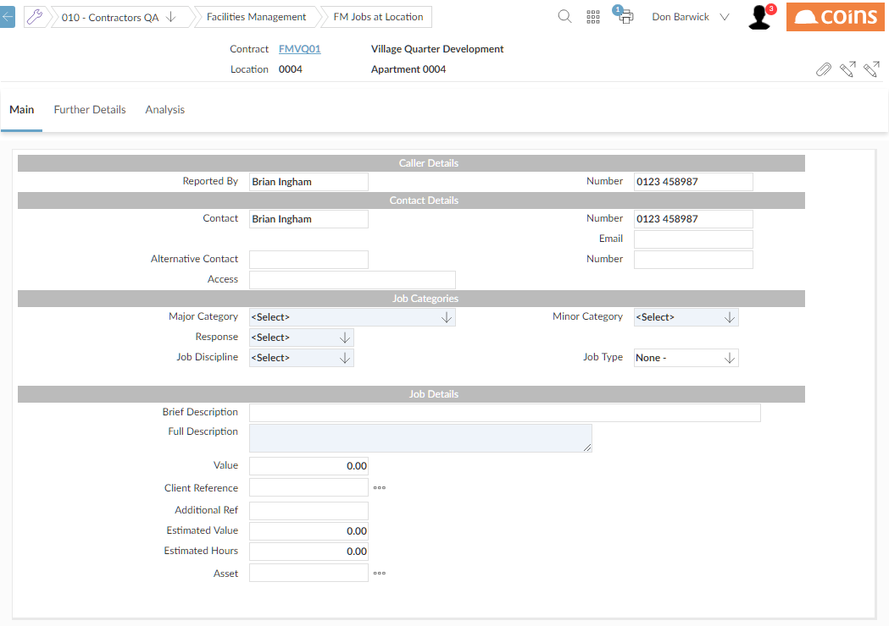
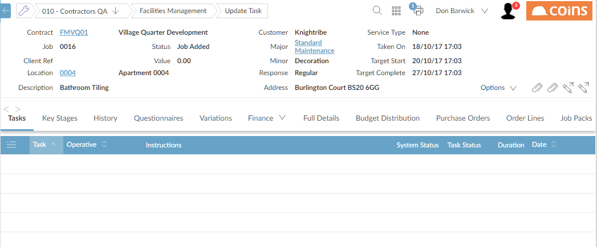

displays the Add screen.

displays the Workbench.

This shows the reference and the target start and complete dates for the . The has associated with it any standard tasks based on the type.
 ..
..